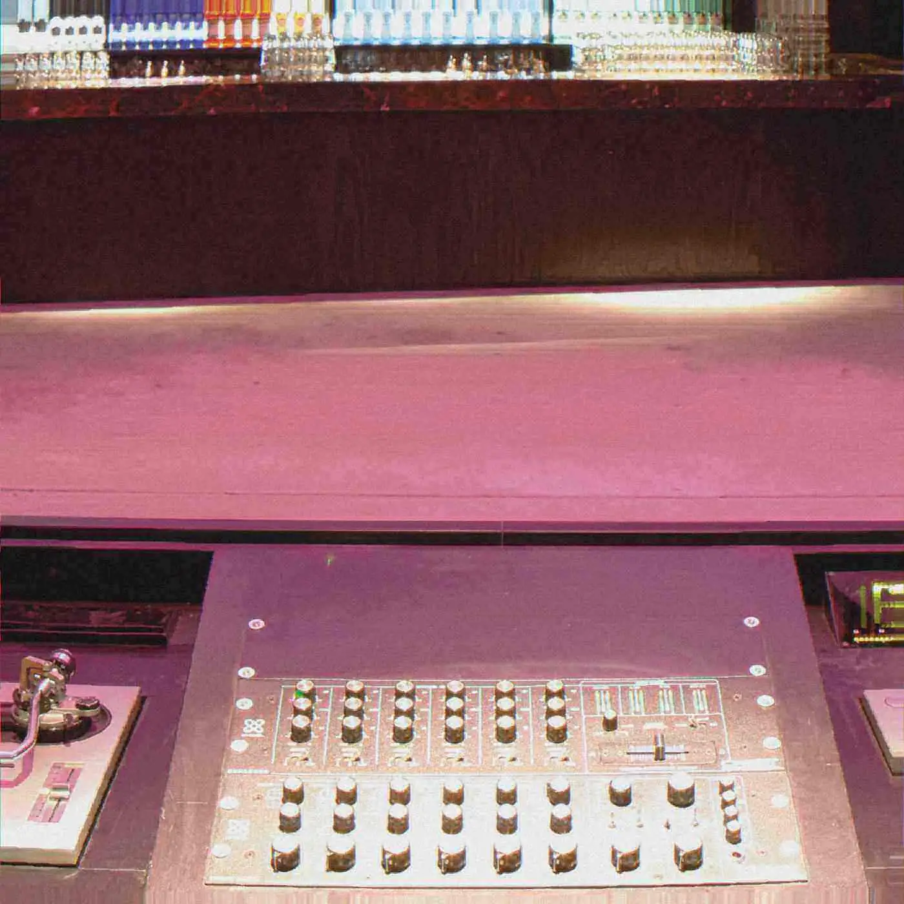

Review
Baddest of Them All
Eliza Rose and Interplanetary Criminal's B.O.T.A.: a UK garage chant that reached the Top 10 with Lisa Lisa in the sample.
- format
- Review
- date
- Oct 23, 2026
- author
- CJ Archer
- places
- Munich
- artists
- Eliza Rose
- words
- 742 words · 3 min
- photo
- Photo: Arnold Jaeger Werner
- catalogue
- CC006
“B.O.T.A. (Baddest of Them All),” by Eliza Rose and Interplanetary Criminal, moved the way UK garage used to move when it was chart music: club play, then the radio, then the UK Top 10. The sample a listener keeps recognizing is Lisa Lisa & Cult Jam. A Korg M1, the workstation keyboard that colored so much late-1980s and early-1990s dance music, is in the spine of the track, which is a historically tidy joke: the instrument of an earlier pop-dance era holding up a revival that did not feel like a revival in the room.
UK garage, briefly, for a reader who did not inherit it: the late-1990s British rewrite of house, shuffled rather than four-on-the-floor, built for vocal songs as much as for DJ tools, native to pirate radio and to specific London clubs, and then suddenly native to the pop chart. Artful Dodger and Craig David, Sweet Female Attitude, So Solid Crew — different records, same fact. The rhythm could carry a song into daylight. After the chart wave receded, the music lived in smaller rooms and in the taste of DJs who never dropped it. Every few years someone announces it is back. The announcements are usually about a newsletter. The records, when they are real, are about a chant people already know before the newsletter exists.
Rose’s chant is the song. “Baddest of them all” is a phrase you can shout without a lyric sheet, which is the old test. Interplanetary Criminal’s production keeps the skip light enough that the vocal leads. Mixmag’s Lab series and a Glastonbury moment — she has told the story of hearing the record from the crowd and reacting as a person, not as a campaign — are part of the public narrative of the single’s summer. Peach and Shanti Celeste are among the DJs whose play was cited as the record moved. The radio arrived after the DJs, which is the ordinary order of this kind of hit: a booth, a chant, a wider room, a chart. Purity is a story people tell later.
The critical point worth keeping is about authorship and about gender, and it should be made without a speech. Garage’s first chart era included women as vocalists constantly and as credited lead artists less often than the vocals suggested. A record with Eliza Rose’s name first, built on a chant she could walk out of a crowd singing, is a different credit structure. The credit does not repair the history. It does put her name first. The sample of Lisa Lisa ties that credit to an earlier New York record in which a woman’s voice was the hook and the hook was the composition. Lineage, in dance music, is often described as a line of male DJs handing each other records. The samples keep telling a different lineage. This single happens to make both lineages audible at once: the UKG skip, the 1980s vocal hook, a contemporary producer and a contemporary singer sharing the top line.
Revival talk undersells it. A revival reproduces a style for people who miss it. “B.O.T.A.” used a style because it was the right drum for a chant, and the chant was new. Listeners who were not in the booths in June still got the song, which is what pop is for. Listeners who were in the booths got to watch a record they already knew become everyone else’s. That feeling — the private joke going public — is one of the ordinary emotions of club culture, Garage was a public music the first time. It stayed honest by being public again.
The desk’s first note on the single was six lines and a list of names. The names were right. The length was not. What the single is, on the page, is a garage song that remembered the assignment: a sample with a history, a drum with a city, a phrase people can use, and a chart position that arrived after the dance rather than instead of it. Play it next to something slower from the same year and you hear how much joy the shuffle was still willing to carry. The island shouting the title, in the old note’s phrase, is corny and basically accurate. The chant is the sentence the room can actually use.
Date corrected on 23 October 2026. The previous date on this page fell before 12 February 2024, the founding date on the Club Copy about page.